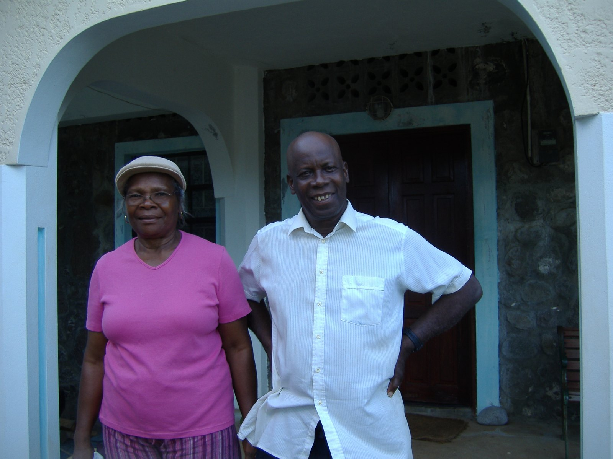
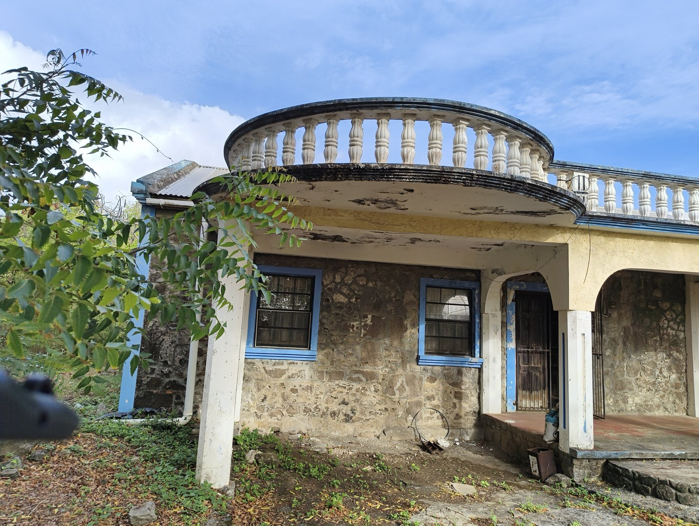
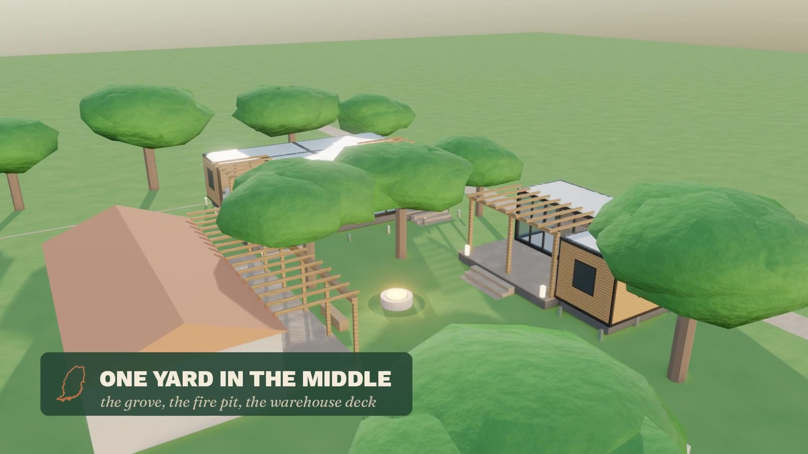
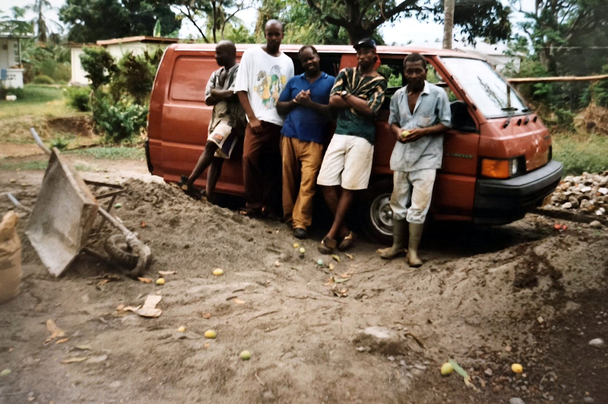

Family call · Sunday 18 October 2026 · 7pm
Tonight we talk it through. Nobody decides anything tonight.

How tonight works
On the call? Unmute, or put a hand up in the chat. We'll hear from people on the call first.
Why
Dad built it from the stone on the land, with walls half a metre thick. It's standing empty, and the damp, the cracks and the weather are winning. Left as it is, it ends in a sale.

What the house money buys
The offer
£7,000 back is the starting point, not the limit. After that, we choose: keep repaying until all £14,000 each is back, or start the improvements fund.
The house is let as a whole house for about 20 weeks a year. The rest of the year it's ours.
What it costs
| What | Low | High |
|---|---|---|
| The house rescued, with 15% contingency | £69,768 | £86,543 |
| Solar (installed quote) | £8,256 | £8,256 |
| The back opening | £7,700 | £7,700 |
| Decks and pergola | £9,776 | £11,576 |
| The house, complete | £95,500 | £114,075 |
| What we'd raise | £98,000 | £98,000 |
| Difference | £2,500 spare | £16,075 short |
41–48% comes from real quotes. LID's revised quote lands Wednesday 21 October.
How the money comes back
| Repaid by the end of year… | 1 | 3 | 5 |
|---|---|---|---|
| Expected: let 20 weeks a year | £6.8k | £32.8k | £49.0k ✓ |
| Cautious: let only 10 weeks | £3.4k | £20.4k | £44.5k |
| Worst modelled | £3.4k | £17.5k | £35.7k |
At £7,000 each, the house's income then goes into an improvements fund: care as we get older, the next generation, bursaries for young people in Simon. Or we decide to keep repaying until all £14,000 is back, which takes roughly three more years if the house lets as expected. The choice is ours.
Keeping it separate
We'd check all of this with a Grenadian lawyer first. The more of us who are citizens, the simpler it is for the company to hold land.
Since 7 October
Two shapes, over 20 years
| A · Private home | B · The prospectus | |
|---|---|---|
| Each of us puts in | £7,000 (£49,000) | £14,000 (£98,000) |
| What it buys | A sound house: roof, cracks, rewire, plumbing, septic, windows, shutters. Kitchen and finishes only if the money stretches. | The house complete: kitchen, bathroom, solar, the back opened to the land, decks |
| Most of the year | Empty | Lived in, with someone on the ground |
| Upkeep, insurance, storms | From our pockets: roughly £4,000–10,000 a year, or £570–1,460 each | I cover upkeep while I live there, and the house earns enough to carry it after that |
| Money back | None | At least £7,000 by about year 5. All £14,000 by about year 8, if we choose. |
| After that | The same costs, every year | An improvements fund: care, the next generation, bursaries |
Both keep the house in the family. The question is which one still looks after it in 20 years.
What I'm putting in
Phase 1 opens with the house: the warehouse kitchen, the first two guest suites, solar and e-scooters. Phase 1b follows as it earns: the third suite, the pergola and bar, the pool. All mine to fund, in stages.
It makes the house easier to let. A pool, a hot tub, group bookings and retreats bring in more and bigger bookings, so we get repaid sooner.
It sits in the back garden, and the farmed land and its tenants are untouched. On top of my £14,000: all the upkeep while I'm there, and rent to the house from year 3.

Q1 · for us to decide
If any of this is easier to talk about one to one, ring me any time.
Q2 · for us to decide
Up to £16,075 could be uncovered at the high end. The options I can see:
Q3 · for us to decide
The weeks that let best, Carnival and summer, are the weeks many of us will want to be there.
Q4 · for us to decide
What matters most to you?
What happens next
Thank you
What's the one thing you'd want in the second version?
